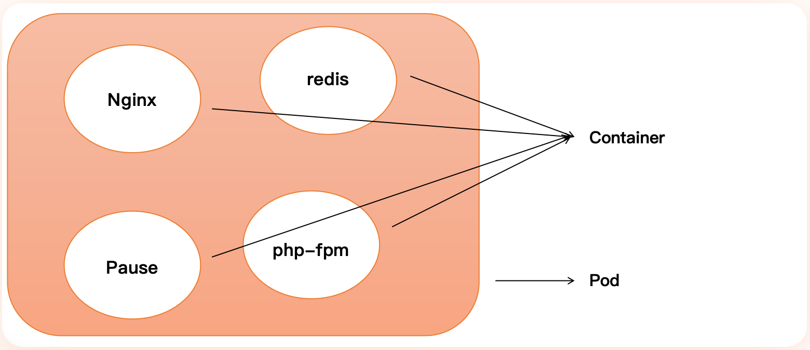
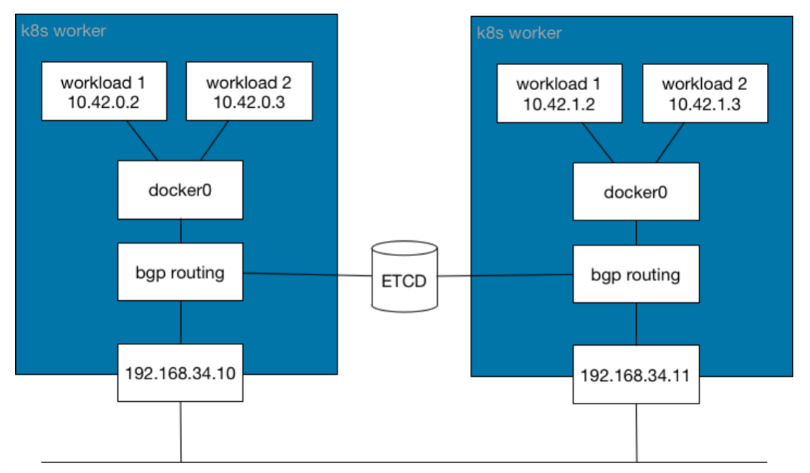
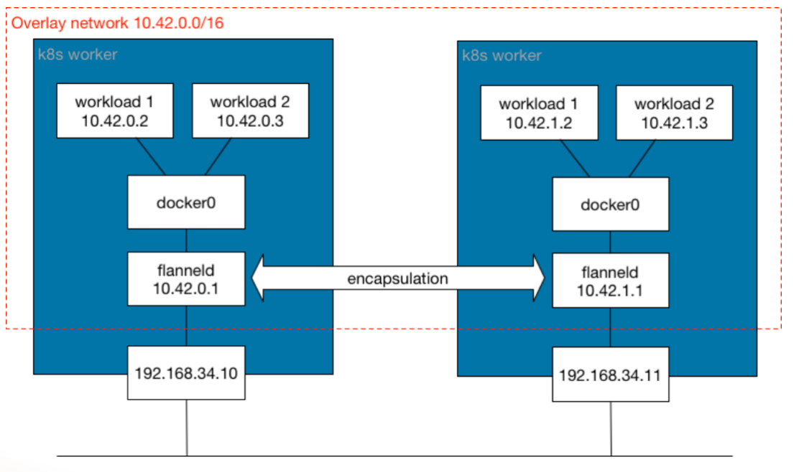
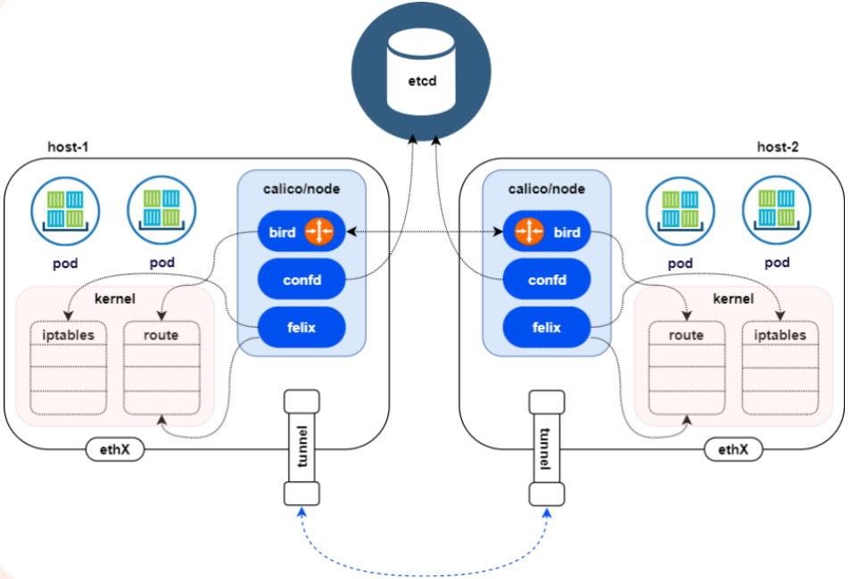
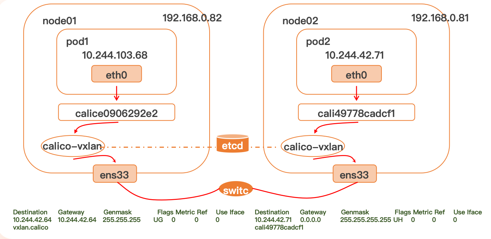
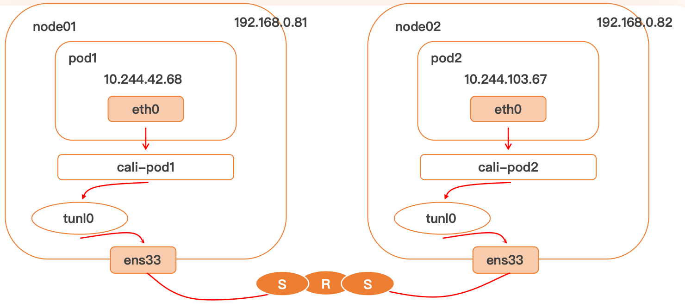
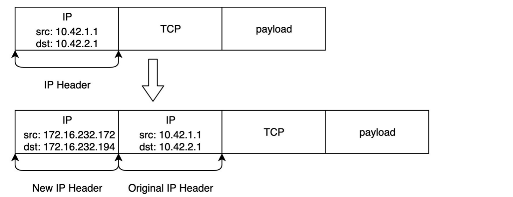
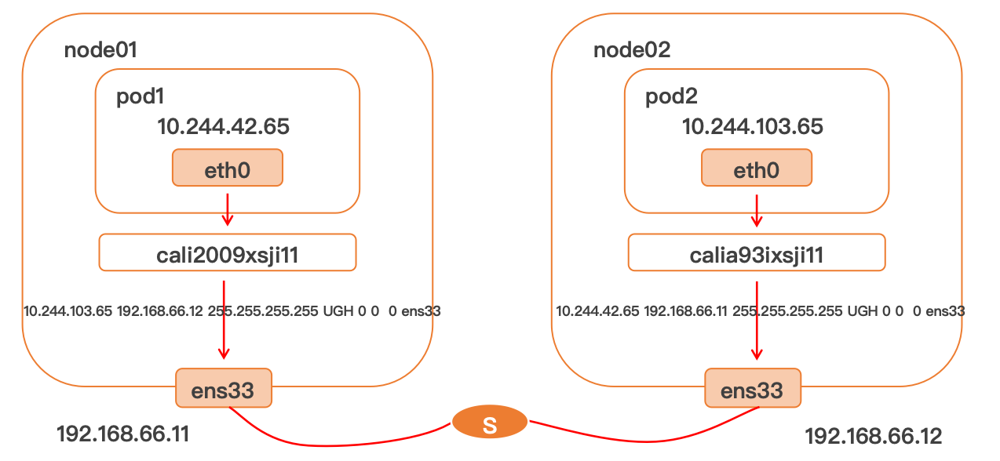

本文介绍了 Kubernetes 的网络模型，包括 Pod 的网络结构、Pause 容器的作用、虚拟以太网通信流程、CNI 插件机制以及常见的网络插件（如 Flannel、Calico、Cilium）。还对 Overlay 和 Underlay 网络模型进行了对比，并重点说明了 Calico 的 VXLAN、IPIP、BGP 三种通信方式的特点与区别。
基本概述
Kubernetes 的网络模型假定了所有 Pod 都在一个可以直接连通的扁平的网络空间中，这在 GCE（Google Compute Engine）里面是现成的网络模型，Kubernetes 假定这个网络已经存在。而在私有云里搭建 Kubernetes 集群，就不能假定这个网络已经存在了。我们需要自己实现这个网络假设，将不同节点上的 Docker 容器之间的互相访问先打通，然后运行 Kubernetes。
Pod

pod是最小部署模块，是一个或多个容器的集合，容器共享网络和存储资源。
Pause
Pause 容器是 Kubernetes 中的一个特殊容器，主要用于管理 Pod 的网络命名空间。它并不执行任何实际的应用程序，而是充当 Pod 的基础容器。Pause 容器的存在使得其他容器可以共享同一个网络命名空间。
为什么会需要Pause？
因为 Kubernetes 中的 Pod 是一个逻辑上的概念，它可以包含多个容器，这些容器需要共享网络和存储资源。Pause 容器的作用是为这些容器提供一个共同的网络命名空间。 如果让实际的应用容器来承担这个角色，会导致一些问题，比如当这个容器意外退出时，整个 Pod 的网络命名空间也会被销毁，从而导致其他容器无法正常工作。而 Pause 是一个轻量级的容器，意外崩溃的概率非常低，因此它可以稳定地提供网络命名空间。
- Pod 内部第一个启动的容器。
- 初始化网络栈：Pause 容器首先启动并创建 Pod 的网络命名空间。Pod 中的所有其他容器都将加入到这个由 Pause 容器创建的网络命名空间中，从而共享网络栈（包括 IP 地址、网络设备、端口等）。
- 挂载需要的存储卷：除了网络，Pause 容器也负责挂载 Pod 所需的共享存储卷。
- 回收僵尸进程：在某些情况下，Pause 容器也会负责回收 Pod 中其他容器产生的僵尸进程。
Pod 中其他容器
- 共享网络命名空间 (Network)：它们共享同一个 IP
地址和端口空间。一个容器监听的端口，在 Pod
级别是可见的，其他容器可以通过
localhost访问。 - 共享 PID 命名空间 (PID)：容器可以看到 Pod 内其他容器的进程。
- 共享 IPC 命名空间 (IPC)：容器可以共享 System V IPC 和 POSIX 消息队列。
Pod 与外部通信方式
Pod 与外部通信主要通过虚拟以太网对（veth pair）实现。当一个 Pod 被创建时，CNI 插件会执行以下步骤：
- 创建 veth pair：生成一对虚拟以太网接口，例如
eth0和veth0。 - 分配到 Pod 内部：将
eth0接口放入 Pod 的网络命名空间中，并将其重命名为 Pod 内部的默认网络接口（通常也是eth0）。Pod 会通过这个接口获取 IP 地址。 - 连接到主机网桥：将
veth0接口留在主机网络命名空间中，并将其连接到主机的网桥（例如docker0或 CNI 插件创建的网桥）。 - 路由配置：主机上的网络栈会配置相应的路由规则，使得从
Pod
eth0发出的流量通过veth0到达主机网桥，然后根据主机的路由表转发到集群内部其他 Pod 或外部网络。反之，发往 Pod IP 的流量也会通过主机网桥和vethpair 转发到 Pod 内部。
下面给出一个建立 Pod 与外部通信的示例：
1 | # 创建虚拟以太网对 |
[!IMPORTANT]
主机上的网桥(Bridge)是一个虚拟网络设备，它允许不同的网络接口（如 veth pair）之间进行通信。
通过将 veth0 接口连接到主机的网桥，Pod 内部的容器就可以与其他 Pod 或外部网络进行通信。 将 POD-1 对应的 veth0 接口和 POD-2 对应的 veth1 接口连接到同一个网桥（如 docker0），就可以实现 POD-1 和 POD-2 之间的直接通信。 将 Pod 的 veth 接口连接到主机的网桥后，由于主机实际的网卡ens33也连接到同一个网桥，因此 Pod 内部的容器可以对外部网络进行访问。
K8S网络
- 在不使用网络地址转换 (NAT) 的情况下，集群中的 Pod 能够与任意其他 Pod 进行通信
- 在不使用网络地址转换 (NAT) 的情况下，在集群节点上运行的程序能与同一节点上的任何 Pod 进行通信
- 每个 Pod 都有自己的 IP 地址（IP-per-Pod），并且任意其他 Pod 都可以通过相同的这个地址访问它
CNI - Container Network Interface
借助 CNI 标准，Kubernetes 可以实现容器网络问题的解决。通过插件化的方式来集成各种网络插件，实现集群内部网络相互通信，只要实现CNI标准中定义的核心接口操作（ADD，将容器添加到网络；DEL，从网络中删除一个容器；CHECK，检查容器的网络是否符合预期等）。CNI插件通常聚焦在容器到容器的网络通信。
CNI 通过 JSON 格式的配置文件来描述网络配置，当需要设置容器网络时，由容器运行时负责执行 CNI 插件，并通过 CNI 插件的标准输入（stdin）来传递配置文件信息，通过标准输出（stdout）接收插件的执行结果。从网络插件功能可以分为五类：
- Main 插件：创建具体网络设备（bridge：网桥设备，连接 container 和 host；ipvlan：为容器增加 ipvlan 网卡；loopback：IO设备；macvlan：为容器创建一个 MAC 地址；ptp：创建一对Veth Pair；vlan：分配一个vlan设备；host-device：将已存在的设备移入容器内）
- IPAM 插件：负责分配IP地址（dhcp：容器向 DHCP 服务器发起请求，给 Pod 发放或回收IP地址；host-local：使用预先配置的 IP 地址段来进行分配；static：为容器分配一个静态 IPv4/IPv6 地址，主要用于 debug）
- META 插件：其他功能的插件（tuning：通过 sysctl 调整网络设备参数；portmap：通过 iptables 配置端口映射；bandwidth：使用 Token Bucket Filter 来限流；sbr：为网卡设置 source based routing；firewall：通过 iptables给容器网络的进出流量进行限制）
- Windows 插件：专门用于 Windows 平台的 CNI 插件（win-bridge 与 win-overlay 网络插件）
- 第三方网络插件：第三方开源的网络插件众多，每个组件都有各自的优点及适应的场景，难以形成统一的标准组件，常用有 Flannel、Calico、Cilium、OVN 网络插件
网络插件
| 提供商 | 网络模型 | 路由分发 | 网络策略 | 网格 | 外部数据存储 | 加密 | Ingress/Egress 策略 |
|---|---|---|---|---|---|---|---|
| Canal | 封装 (VXLAN) | 否 | 是 | 否 | K8S API | 是 | 是 |
| Flannel | 封装 (VXLAN) | 否 | 否 | 否 | K8S API | 是 | 否 |
| Calico | 封装 (VXLAN, IPIP) 或未封装 | 是 | 是 | 否 | Etcd 和 K8s API | 是 | 是 |
| Weave | 封装 | 是 | 是 | 是 | 否 | 是 | 是 |
| Cilium | 封装 (VXLAN) | 是 | 是 | 是 | Etcd 和 K8S API | 是 | 是 |
功能说明
- 网络模型：封装或未封装。
- 路由分发：一种外部网关协议，用于在互联网上交换路由和可达性信息。BGP 可以帮助进行跨集群 pod 之间的网络。此功能对于未封装的 CNI 网络插件是必须的，并且通常由 BGP 完成。如果你想构建跨网段拆分的集群，路由分发是一个很好的功能。
- 网络策略：Kubernetes 提供了强制执行规则的功能，这些规则决定了哪些 service 可以使用网络策略进行相互通信。这是从 Kubernetes 1.7 起稳定的功能，可以与某些网络插件一起使用。
- 网格：允许在不同的 Kubernetes 集群间进行 service 之间的网络通信。
- 外部数据存储：具有此功能的 CNI 网络插件需要一个外部数据存储来存储数据。
- 加密：允许加密和安全的网络控制和数据平面。
- Ingress/Egress 策略：允许你管理 Kubernetes 和非 Kubernetes 通信的路由控制。
网络模型
- underlay network（非封装网络）
- 现实的物理基础层网络设备
- underlay 就是数据中心场景的基础物理设施，保证任何两个点路由可达，其中包含了传统的网络技术
- 发送的和接受到的都是原始数据包

- overlay network（封装网络）
- 一个基于物理网络之上构建的逻辑网络
- overlay 是在网络技术领域指的是一种网络架构上叠加的虚拟化技术模式
- Overlay 网络技术多种多样，一般采用TRILL、VxLan、GRE、NVGRE等隧道技术
- 发送的和接受到的都是封装后的数据包

calico
Calico 是一个纯三层的虚拟网络，它没有复用 docker 的 docker0 网桥，而是自己实现的，calico 网络不对数据包进行额外封装，不需要 NAT 和端口映射
架构

- Felix
- 管理网络接口
- 编写路由
- 编写 ACL
- 报告状态
- bird（BGP Client）
- BGP Client 将通过 BGP 协议广播告诉剩余 calico 节点，从而实现网络互通
- confd
- 通过监听 etcd 以了解 BGP 配置和全局默认值的更改。Confd 根据 ETCD 中数据的更新，动态生成 BIRD 配置文件。当配置文件更改时，confd 触发 BIRD 重新加载新文件
VXLAN
什么是VXLAN？
VXLAN，即 Virtual Extensible LAN（虚拟可扩展局域网），是Linux本身支持的一种网络虚拟化技术。VXLAN 可以完全在内核态实现封装和解封装工作，从而通过“隧道”机制，构建出覆盖网络（Overlay Network）
基于三层的二层互通：它允许两个不同物理节点上的容器/虚拟机，像在一个交换机中一样，用 MAC 通信，哪怕它们在不同网段、不同子网中。三层即 vxlan 包封装在 udp 数据包中，要求 udp 在 k8s 节点间三层可达；二层即 vxlan 封包的源 mac 地址和目的 mac 地址是自己的 vxlan 设备 mac 和对端 vxlan 设备 mac。
这样的话，Pod 之间的通信看起来都是利用 MAC 地址进行的，就像在同一个二层网络中一样。实际上，VXLAN 在物理网络之上创建了一个虚拟的覆盖网络，使得不同物理节点上的容器可以像在同一个局域网中一样进行通信。

- 数据包封包：封包，在 vxlan 设备上将 pod 发来的数据包源、目的 mac 替换为本机 vxlan 网卡和对端节点 vxlan 网卡的 mac。外层 udp 目的 ip 地址根据路由和对端 vxlan 的 mac 查 fdb 表获取。
- 优势：只要 k8s 节点间三层互通， 可以跨网段， 对主机网关路由没有特殊要求。各个 node 节点通过 vxlan 设备实现基于三层的 ”二层” 互通, 三层即 vxlan 包封装在 udp 数据包中， 要求 udp 在 k8s 节点间三层可达；二层即 vxlan 封包的源 mac 地址和目的 mac 地址是自己的 vxlan 设备 mac 和对端 vxlan 设备 mac。
- 缺点：需要进行 vxlan 的数据包封包和解包会存在一定的性能损耗。
IPIP
- Linux 原生内核支持
- IPIP 隧道的工作原理是将源主机的IP数据包封装在一个新的 IP 数据包中，新的 IP 数据包的目的地址是隧道的另一端。在隧道的另一端，接收方将解封装原始 IP 数据包，并将其传递到目标主机。IPIP 隧道可以在不同的网络之间建立连接，例如在 IPv4 网络和 IPv6 网络之间建立连接。


- 数据包封包：封包，在 tunl0 设备上将 pod 发来的数据包的 mac 层去掉，留下 ip 层封包。 外层数据包目的 ip 地址根据路由得到。
- 优点：只要 k8s 节点间三层互通， 可以跨网段， 对主机网关路由没有特殊要求。
- 缺点：需要进行 IPIP 的数据包封包和解包会存在一定的性能损耗。
BGP
边界网关协议（Border Gateway Protocol, BGP）是互联网上一个核心的去中心化自治路由协议。它通过维护IP路由表或‘前缀’表来实现自治系统（AS）之间的可达性，属于矢量路由协议。BGP不使用传统的内部网关协议（IGP）的指标，而使用基于路径、网络策略或规则集来决定路由。因此，它更适合被称为矢量性协议，而不是路由协议。BGP，通俗的讲就是讲接入到机房的多条线路（如电信、联通、移动等）融合为一体，实现多线单IP，BGP 机房的优点：服务器只需要设置一个IP地址，最佳访问路由是由网络上的骨干路由器根据路由跳数与其它技术指标来确定的，不会占用服务器的任何系统。

- 数据包封包：不需要进行数据包封包
- 优点：不用封包解包，通过 BGP 协议可实现 pod 网络在主机间的三层可达。
- 缺点：跨网段时，配置较为复杂网络要求较高，主机网关路由也需要充当 BGP Speaker。